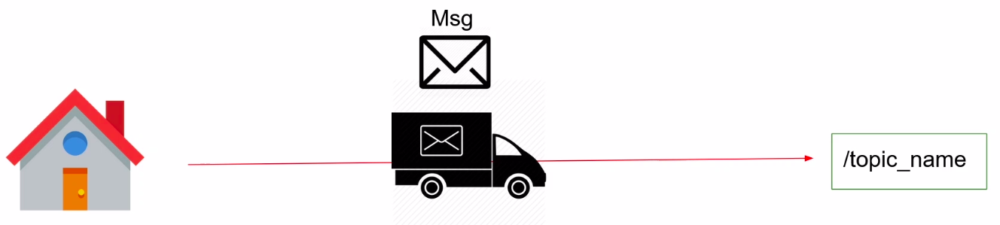
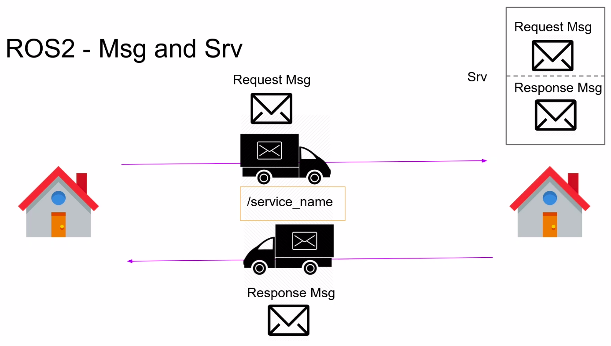
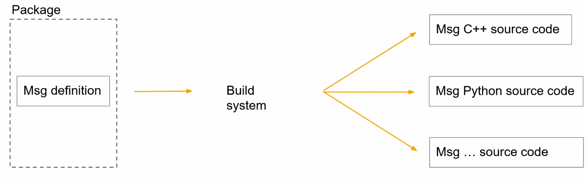
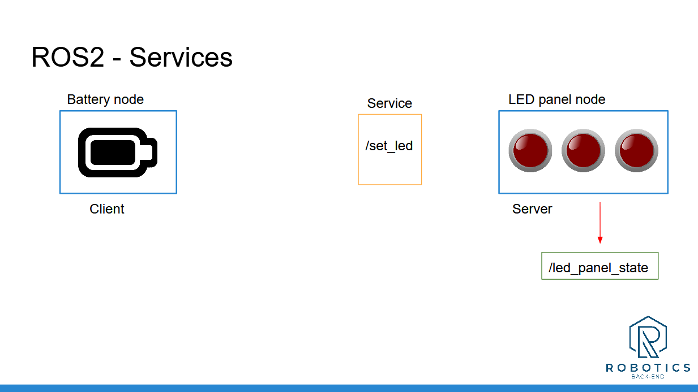
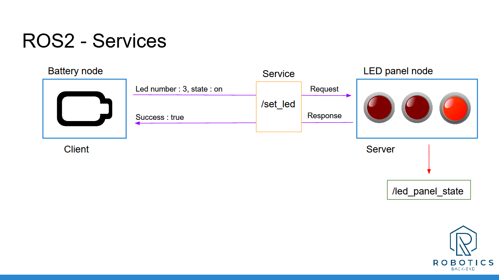
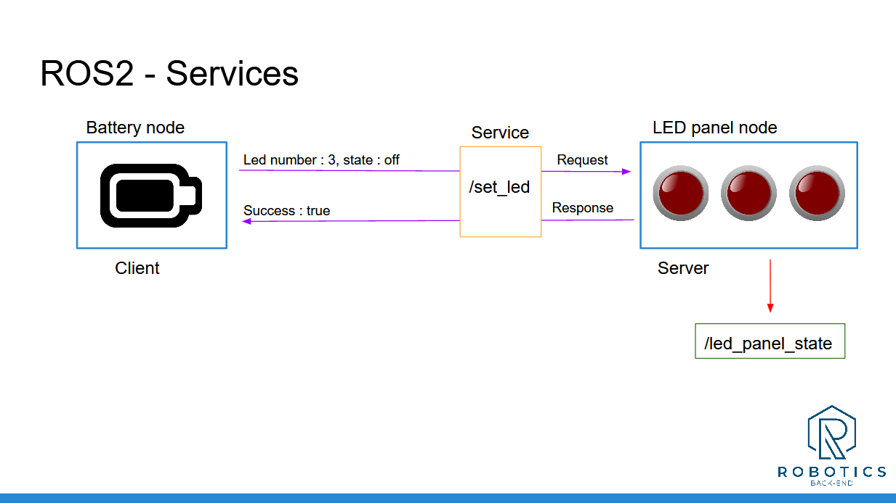

colcon turns it into Python code.my_robot_interfaces..msg and a .srv file using basic types and arrays.msg/HardwareStatus.msgCMakeLists.txt + package.xmlcolcon buildfrom my_robot_interfaces.msg import …| Time | Activity | Type |
|---|---|---|
| 0:00–0:10 | Warm-up + demo of reset_counter | Check |
| 0:10–0:30 | What is an interface, the build pipeline, the types table | Teach |
| 0:30–1:00 | Lab 1 — my_robot_interfaces + HardwareStatus.msg (go slowly: 2 config files) | Do |
| 1:00–1:25 | Lab 2 — hw_status_publisher | Do |
| 1:25–1:35 | Break | |
| 1:35–2:00 | Lab 3 — ComputeRectangleArea.srv + server | Do |
| 2:00–2:50 | Activity 5.1 — battery + LED panel (in pairs: one writes each node) | Do |
| 2:50–3:00 | Exit ticket + homework | Check |
Teaching tip. Most build errors today come from the CMakeLists.txt / package.xml edits. Project a correct copy and have students compare line by line before building. Remind them to rebuild both packages (interfaces first) and to source.
What are the request and response of example_interfaces/srv/SetBool?
bool data. Response: bool success, string message.We want to publish a robot's temperature, whether its motors are ready, and a debug text, all in one message. Which existing message can do that?
An interface is a form with fixed boxes. A topic is the post box, and the interface is the form you post: everyone agrees that box 1 is "temperature (number)" and box 2 is "motors ready (yes/no)". If the sender and receiver use different forms, nothing works.
A topic is identified by two things: a name (/number_count) and a msg definition (example_interfaces/msg/Int64).
A service is identified by a name (/reset_counter) and a srv definition (example_interfaces/srv/SetBool).
Topics and services are the communication layer; interfaces are the content you send.
You write a tiny text file. When you run colcon build, ROS 2 generates code from it for every language. Your Python node then simply does from my_robot_interfaces.msg import HardwareStatus.
| You write | Meaning | Example |
|---|---|---|
bool | true / false | bool are_motors_ready |
int64 (also int32, uint8…) | whole number | int64 temperature |
float64 (also float32) | decimal number | float64 length |
string | text | string debug_message |
TYPE[] | a list (array) of any type | int64[] led_states |
pkg/Msg or Msg | another message inside yours | geometry_msgs/Point position, Turtle[] turtles |
HardwareStatus.msg ✔ hardware_status.msg ✘are_motors_ready ✔ AreMotorsReady ✘


type name.--- response fields.LedStateArray.msg.led_states.int64[] led_states is a list in Python.Turtle[] turtles.Goal: ros2 interface show my_robot_interfaces/msg/HardwareStatus prints your three fields.
Interfaces live in their own package, so every other package (Python or C++) can use them. It must be a CMake package, which is the default.
cd ~/ros2_ws/src
ros2 pkg create my_robot_interfaces
cd my_robot_interfaces
rm -rf include/ src/
mkdir msg srvint64 temperature
bool are_motors_ready
string debug_messagepackage.xml: add the 3 highlighted lines <buildtool_depend>ament_cmake</buildtool_depend>
<build_depend>rosidl_default_generators</build_depend>
<exec_depend>rosidl_default_runtime</exec_depend>
<member_of_group>rosidl_interface_packages</member_of_group>
<test_depend>ament_lint_auto</test_depend>CMakeLists.txt: replace everything with thiscmake_minimum_required(VERSION 3.8)
project(my_robot_interfaces)
find_package(ament_cmake REQUIRED)
find_package(rosidl_default_generators REQUIRED)
rosidl_generate_interfaces(${PROJECT_NAME}
"msg/HardwareStatus.msg"
)
ament_export_dependencies(rosidl_default_runtime)
ament_package()From now on, every new .msg or .srv file gets one line inside rosidl_generate_interfaces( … ).
cd ~/ros2_ws
colcon build --packages-select my_robot_interfaces
source ~/.bashrc
ros2 interface show my_robot_interfaces/msg/HardwareStatusint64 temperature bool are_motors_ready string debug_message
my_py_pkg that it uses your interfaces <depend>rclpy</depend>
<depend>example_interfaces</depend>
<depend>my_robot_interfaces</depend>#!/usr/bin/env python3
import rclpy
from rclpy.node import Node
from my_robot_interfaces.msg import HardwareStatus
class HardwareStatusPublisherNode(Node):
def __init__(self):
super().__init__("hardware_status_publisher")
self.hw_status_publisher_ = self.create_publisher(HardwareStatus, "hardware_status", 10)
self.timer_ = self.create_timer(1.0, self.publish_hw_status)
self.get_logger().info("Hardware status publisher has been started")
def publish_hw_status(self):
msg = HardwareStatus()
msg.temperature = 45
msg.are_motors_ready = True
msg.debug_message = "Nothing special here"
self.hw_status_publisher_.publish(msg)
def main(args=None):
rclpy.init(args=args)
node = HardwareStatusPublisherNode()
rclpy.spin(node)
rclpy.shutdown()
if __name__ == "__main__":
main()# setup.py: "hw_status_publisher = my_py_pkg.hw_status_publisher:main",
cd ~/ros2_ws && colcon build --symlink-install && source ~/.bashrc
ros2 run my_py_pkg hw_status_publisherros2 topic info /hardware_status
ros2 topic echo /hardware_statusType: my_robot_interfaces/msg/HardwareStatus ... temperature: 45 are_motors_ready: true debug_message: Nothing special here ---
We ran colcon build without --packages-select, so it builds all packages in the right order: interfaces first, then the Python package that needs them.
float64 length
float64 width
---
float64 arearosidl_generate_interfaces(${PROJECT_NAME}
"msg/HardwareStatus.msg"
"srv/ComputeRectangleArea.srv"
)cd ~/ros2_ws && colcon build --packages-select my_robot_interfaces && source ~/.bashrc
ros2 interface show my_robot_interfaces/srv/ComputeRectangleArea
ros2 interface package my_robot_interfaces
ros2 interface list | grep my_robot#!/usr/bin/env python3
import rclpy
from rclpy.node import Node
from my_robot_interfaces.srv import ComputeRectangleArea
class RectangleServer(Node):
def __init__(self):
super().__init__("rectangle_server")
self.create_service(ComputeRectangleArea, "compute_rectangle_area", self.callback_area)
self.get_logger().info("Rectangle area server ready")
def callback_area(self, request, response):
response.area = request.length * request.width
self.get_logger().info(f"{request.length} x {request.width} = {response.area}")
return response
def main(args=None):
rclpy.init(args=args)
rclpy.spin(RectangleServer())
rclpy.shutdown()
if __name__ == "__main__":
main()# setup.py: "rectangle_server = my_py_pkg.rectangle_server:main",
cd ~/ros2_ws && colcon build --packages-select my_py_pkg --symlink-install && source ~/.bashrc
ros2 run my_py_pkg rectangle_server
ros2 service call /compute_rectangle_area my_robot_interfaces/srv/ComputeRectangleArea "{length: 3.0, width: 2.5}"response: my_robot_interfaces.srv.ComputeRectangleArea_Response(area=7.5)



When the battery is empty, the battery node asks the LED panel to turn LED 3 on. When the battery is full again, it asks to turn LED 3 off. The LED panel publishes its LED states all the time.
[0, 0, 0]. It publishes the array on /led_states and offers the service /set_led.msg/LedStateArray.msg, srv/SetLed.srv, the node led_panel.py and the node battery.py.Suggested order (Book §3.1.8): ① the msg + a panel that publishes; test with echo → ② the srv + the panel's server; test with ros2 service call → ③ the battery client.
int64[] led_statesint64 led_number
int64 state
---
bool successAdd both to rosidl_generate_interfaces and rebuild the interfaces package.
Note: the book's SetLed.srv names the second field led_states, but its code uses request.state. We use state in both places.
self.get_clock().now().nanoseconds / 1e9 gives the current time in seconds.#!/usr/bin/env python3
import rclpy
from rclpy.node import Node
from my_robot_interfaces.msg import LedStateArray
from my_robot_interfaces.srv import SetLed
class LedPanelNode(Node):
def __init__(self):
super().__init__("led_panel")
self.led_states_ = [0, 0, 0]
self.led_states_publisher_ = self.create_publisher(LedStateArray, "led_states", 10)
self.led_states_timer_ = self.create_timer(4.0, self.publish_led_states)
self.set_led_service_ = self.create_service(SetLed, "set_led", self.callback_set_led)
self.get_logger().info("LED panel node has been started")
def publish_led_states(self):
msg = LedStateArray()
msg.led_states = self.led_states_
self.led_states_publisher_.publish(msg)
def callback_set_led(self, request, response):
led_number = request.led_number
state = request.state
if led_number > len(self.led_states_) or led_number <= 0:
response.success = False
return response
if state not in [0, 1]:
response.success = False
return response
self.led_states_[led_number - 1] = state
response.success = True
self.publish_led_states() # publish the change straight away
return response
def main(args=None):
rclpy.init(args=args)
rclpy.spin(LedPanelNode())
rclpy.shutdown()
if __name__ == "__main__":
main()#!/usr/bin/env python3
from functools import partial
import rclpy
from rclpy.node import Node
from my_robot_interfaces.srv import SetLed
class BatteryNode(Node):
def __init__(self):
super().__init__("battery")
self.battery_state_ = "full"
self.last_change_ = self.now_seconds()
self.set_led_client_ = self.create_client(SetLed, "set_led")
self.battery_timer_ = self.create_timer(0.1, self.check_battery_state)
self.get_logger().info("Battery node has been started")
def now_seconds(self):
return self.get_clock().now().nanoseconds / 1e9
def check_battery_state(self):
time_now = self.now_seconds()
if self.battery_state_ == "full" and time_now - self.last_change_ > 4.0:
self.battery_state_ = "empty"
self.get_logger().info("Battery is empty! Charging battery...")
self.last_change_ = time_now
self.call_set_led_server(3, 1)
elif self.battery_state_ == "empty" and time_now - self.last_change_ > 6.0:
self.battery_state_ = "full"
self.get_logger().info("Battery is now full again.")
self.last_change_ = time_now
self.call_set_led_server(3, 0)
def call_set_led_server(self, led_number, state):
if not self.set_led_client_.service_is_ready():
self.get_logger().warn("LED panel not available")
return
request = SetLed.Request()
request.led_number = led_number
request.state = state
future = self.set_led_client_.call_async(request)
future.add_done_callback(partial(self.callback_set_led, led_number=led_number, state=state))
def callback_set_led(self, future, led_number, state):
try:
self.get_logger().info(f"LED {led_number} -> {state}: success={future.result().success}")
except Exception as e:
self.get_logger().error(f"Service call failed {e!r}")
def main(args=None):
rclpy.init(args=args)
rclpy.spin(BatteryNode())
rclpy.shutdown()
if __name__ == "__main__":
main()# setup.py: "led_panel = my_py_pkg.led_panel:main", "battery = my_py_pkg.battery:main",
cd ~/ros2_ws && colcon build --symlink-install && source ~/.bashrc
ros2 run my_py_pkg led_panel # terminal 1
ros2 topic echo /led_states # terminal 2
ros2 run my_py_pkg battery # terminal 3Why service_is_ready() instead of the while … wait_for_service loop? Because this call happens inside a timer callback, where a blocking loop would freeze the node (see Lecture 4, "When things go wrong").
srv/SetLed.srv"srv/SetLed.srv" to rosidl_generate_interfacescolcon build --packages-select my_robot_interfacessource ~/.bashrcros2 interface show my_robot_interfaces/srv/SetLedfrom my_robot_interfaces.srv import SetLed in your nodeRobotStatus.msg with a nested geometry_msgs/Point position, publish it, and echo it.Which file name is valid?
Why do interfaces live in their own package?
What does int64[] led_states become in Python?
You added a new .msg but the import fails. What did you most likely forget?
Where do you declare that my_py_pkg uses your interfaces?
| You see… | Why | Fix |
|---|---|---|
| ModuleNotFoundError: my_robot_interfaces | Interfaces not built or not sourced, or dependency missing. | Build the interfaces package, source ~/.bashrc, and add <depend>my_robot_interfaces</depend>. |
| rosidl … "is not a valid message name" | A file name with an underscore or lower case. | Rename it to CamelCase: LedStateArray.msg. |
| ImportError: cannot import name 'SetLed' | New file not listed in CMakeLists, or not rebuilt. | Add the line to rosidl_generate_interfaces and rebuild. |
| AssertionError: The 'led_states' field must be… | Wrong Python type for the field. | int64[] needs a list of int; float64 needs a float (3.0, not 3). |
| Old fields still shown after editing a .msg | Old build still used. | Rebuild the interfaces and the Python package, then source. If still stuck, delete build/ install/ and build again. |
Why do we put interfaces in a separate package?
Which three places do you touch to add a new .srv to an existing interfaces package?
.srv file, add one line in rosidl_generate_interfaces in CMakeLists.txt, then rebuild (and source).Write a message Turtle.msg with a name and an x, y position.
string name / float64 x / float64 y. You'll use exactly this in Lecture 7.Is robot_Status.msg a valid file name?
RobotStatus.msg.ros2 pkg create my_robot_interfacesthen delete include/ src/, add msg/ srv/rosidl_generate_interfaces(${PROJECT_NAME} "msg/X.msg" "srv/Y.srv")in CMakeLists.txtros2 interface show pkg/msg/Xcheck your definitionros2 interface list · ros2 interface package PKGfind interfacesfrom my_robot_interfaces.msg import Xuse it in Python<depend>my_robot_interfaces</depend>in the user package's package.xmlTurtle.msg (string name, float64 x, float64 y, float64 theta) and TurtleArray.msg (Turtle[] turtles). Build and ros2 interface show them; you'll need them in Lecture 7.